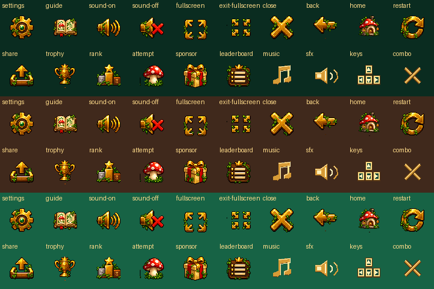
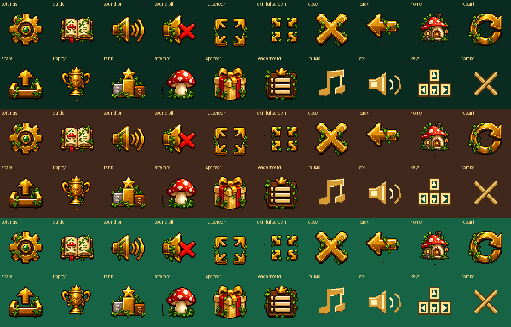
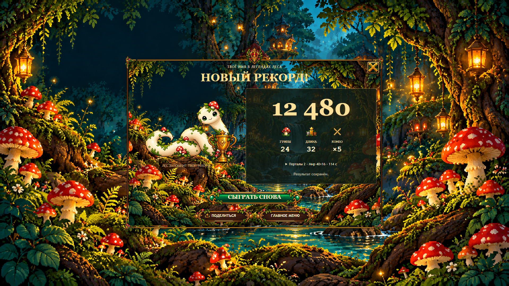
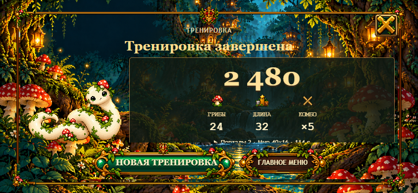
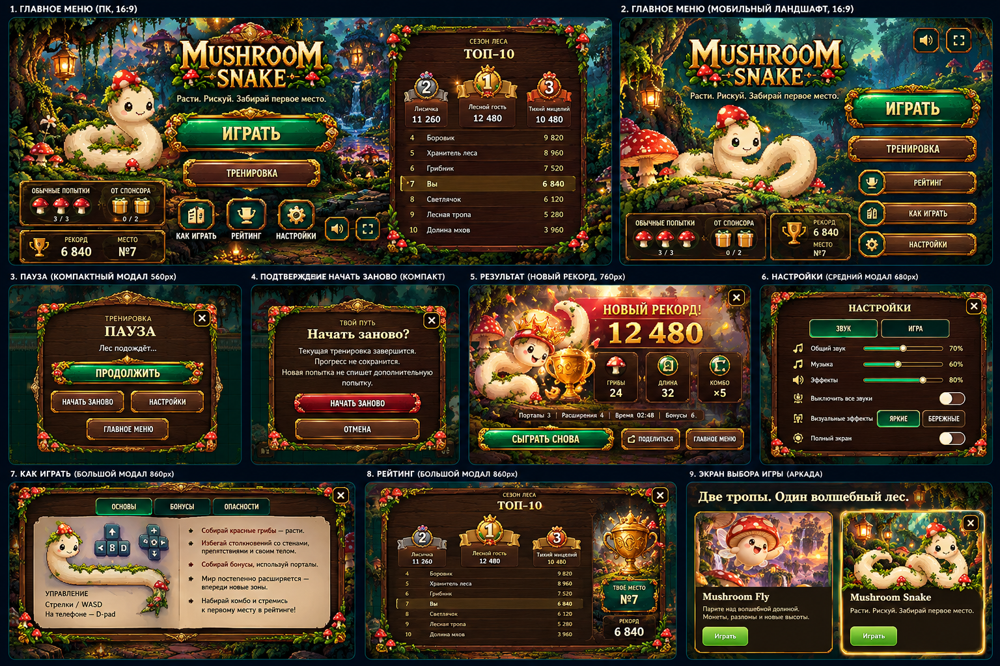
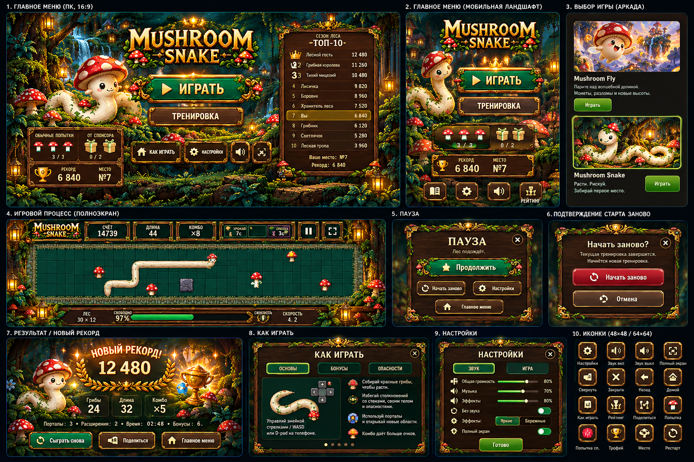
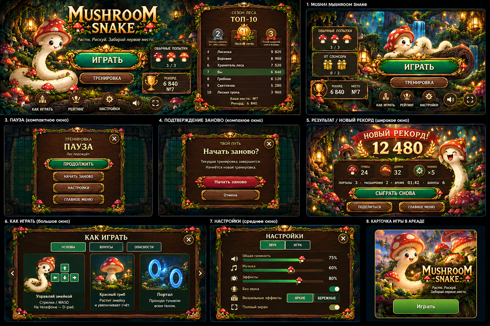
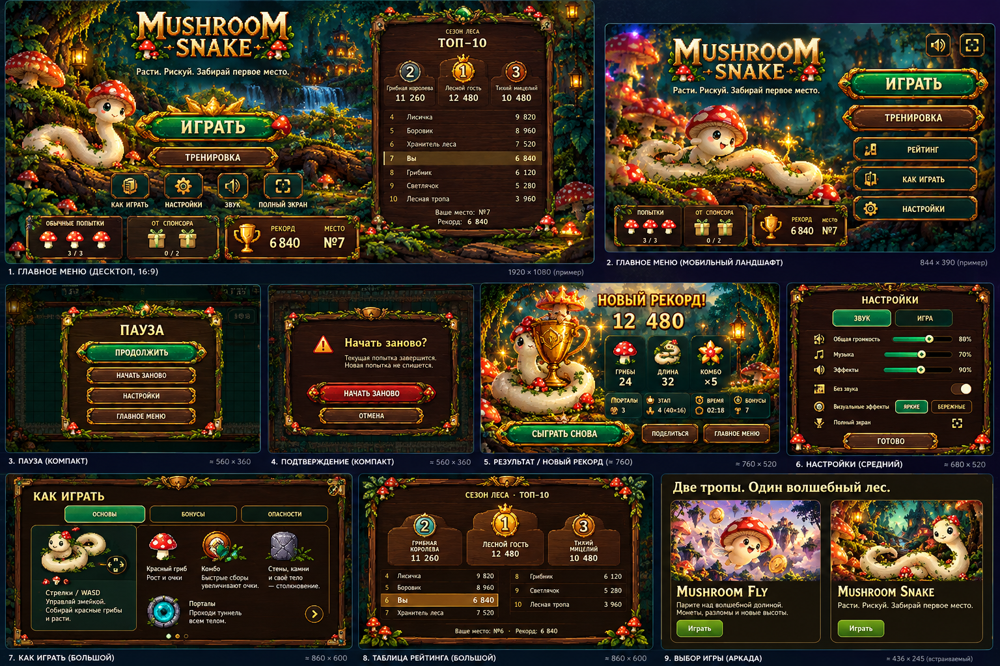

Четыре приложенных composite-референса покрывают семь требуемых экранов. Референсы/crops ниже используются ТОЛЬКО в документации. В runtime нет ни одного их пикселя.
Слева — human art direction. Справа — фактическая реализация. Автоматические gates не заменяют human visual approval. Локальные Pause/Record screenshots — fixtures; terminal Training Result в TEST capture — настоящий канонический результат.
PNG48×48 + выборочные64×64. Без SVG/font/emoji. Откройте PNG кликом для масштаба1×.


Не полная панель/кнопка: corners + axis-only strips + wood, independent crests. Caps сохраняют ratio, чистый center повторяется. Status rail64px. FIT WORLD/collision/Smooth V4 не изменены.

844×390 touch-контекст, отдельная композиция; Settings volume44px проверены после прокрутки.




